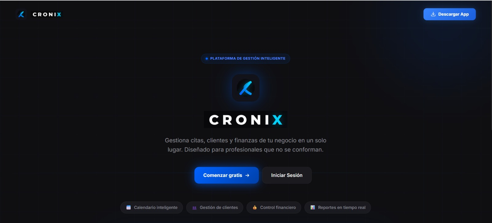
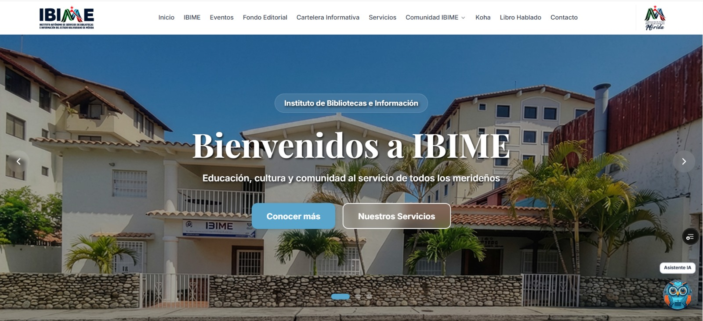

Hola, soy Luis Romero
Backend Developer y AI Engineer con más de 3 años llevando productos de IA a producción — y manteniéndolos ahí. Construyo backend en Complexity (Texas, EE. UU.) y fundé Cronix, un SaaS multi-tenant 24/7 que gestiona 250+ citas reales de forma autónoma. Mi trabajo no es enchufar un LLM: es diseñar los controles que evitan que invente datos, y medir su fiabilidad en lugar de darla por supuesta.
Sobre mí
Quién soy
Un poco de contexto y las tecnologías con las que trabajo
Soy Backend Developer y AI Engineer con base en Mérida, Venezuela. Empecé como autodidacta en freeCodeCamp y documentación oficial, luego profundicé mis habilidades en el Bootcamp Full-Stack de Academlo — donde descubrí una pasión fuerte por la arquitectura backend — y en octubre de 2026 me gradué de Ingeniería en Sistemas Informáticos.
Hoy construyo backend en Complexity, una empresa de software en Texas, donde audité el backend del producto, me aprobaron el plan de remediación y lo dirigí hasta cerrarlo sin frenar el roadmap — y diseñé el harness de agentes de IA y el pipeline de calidad por los que pasa el trabajo: spec-driven development, evidencia detrás de cada afirmación y cada PR validado por completo en ~6 minutos.
Trabajo con agentes, y los dirijo yo: llevo mis proyectos en Herdr, un entorno de desarrollo agéntico que personalicé al estilo Orca — un worktree de git por tarea y agentes por rol (orquestador, implementador, validador) que se comunican entre proyectos con hagent, una CLI que escribí. Cada cambio parte de una spec versionada, pasa por los quality gates del harness y recibe una validación independiente antes de llegar a un pull request, con Gentle AI como capa de workflow y Engram como memoria persistente entre sesiones.
En paralelo construyo y opero sistemas de IA con usuarios reales todos los días. Fundé Cronix, un SaaS multi-tenant que gestiona citas de forma autónoma por WhatsApp y voz con un motor de orquestación propio — sin framework, completamente desde cero — además de un asistente de taller sobre Python y LangGraph y un asistente industrial anclado al historial real de servicios.
Me importa profundamente la confiabilidad: capas anti-alucinación, arquitecturas deterministas, observabilidad end-to-end y suites de tests completos son parte de todo lo que entrego.
Cuando el proyecto lo requiere, construyo el frontend también — Next.js 15, React 19, PWA con soporte offline. Full-stack cuando es necesario, backend-first siempre.
Experiencia
Dónde he trabajado
- Proyecto Factory: backend de una plataforma B2B de directorio de empresas y de su panel de administración, con app móvil — API REST, tiempo real por WebSockets, colas de trabajo, búsqueda full-text y agentes de IA (NestJS, PostgreSQL, Redis/BullMQ, Elasticsearch, AWS).
- Audité el backend al llegar, presenté los hallazgos y me aprobaron el plan de remediación, que dirigí hasta cerrarlo sin frenar el roadmap: eliminé el acoplamiento indebido entre módulos, bajé las dependencias circulares de 31 a 0 y llevé la lógica de negocio a 330 casos de uso sobre arquitectura hexagonal.
- Diseñé el harness de agentes de IA con el que trabajo — reglas numeradas que el propio código cita, gates de arquitectura y calidad, y un control que pide evidencia de cada afirmación del agente (Orca, Gentle AI, MCP, Spec-Driven Development). Con él planifiqué el trabajo en 700+ tickets y entregué 1.050+ pull requests integrados y 20+ releases a producción en tres meses, revisando y aprobando cada cambio.
- Construí desde cero el pipeline de calidad y seguridad: al llegar, ningún pull request ejecutaba pruebas. Hoy cada cambio pasa por tipado estricto, pruebas unitarias, de integración y end-to-end, escaneo de seguridad (SAST/SCA, secretos) y reglas de arquitectura, y un PR completo se valida en ~6 min. Las pruebas unitarias pasaron de 20 a 1.000+ suites.
- Lideré de punta a punta el backend de "Reclama tu empresa" — el programa de salida al mercado (GTM), hoy en producción — alimentado por una carga asistida por IA en la que un agente arma perfiles de empresa y borradores de producto que nadie publica sin aprobación humana.
- Diseñé un motor de extracción con IA en el que cada dato lleva la cita de su fuente, dos modelos deben coincidir y el código, no el modelo, decide qué se guarda; la calidad se mide con evals contra la decisión del revisor humano y trazas en Langfuse. Casi triplicó la precisión al clasificar categorías.
- Llevé la seguridad a nivel de fila (RLS) de PostgreSQL a producción: de 0 a 63 tablas aplicadas en tres olas reversibles, con pruebas pgTAP que bloquean el merge. Resolví en menos de 4 h un reporte urgente de exposición de datos personales y operé despliegues en AWS (EC2, CloudWatch, Secrets Manager).
- Reemplacé el sistema antiguo (HTML/CSS) de una red pública de bibliotecas por una plataforma digital completa, con un asistente de IA que atiende las consultas de los ciudadanos. La institución la aprobó, la adoptó como su plataforma oficial y, a raíz de esa entrega, me designó Coordinador de Desarrollo de Software.
- Dirigí el desarrollo de software de la institución: decidí el stack y la arquitectura, fijé los estándares de pruebas y calidad, y prioricé el roadmap junto a bibliotecarios y el área de informática.
- Construí el frontend en React sobre arquitectura hexagonal, con las validaciones de datos compartidas entre frontend y backend (Zod) para que el contrato no se rompa en silencio.
- Evité que el asistente inventara respuestas manteniendo el modelo fuera del flujo de decisión: un clasificador de intención por reglas (sin LLM) enruta la conversación, y cuando el correo del ciudadano ya se conoce la respuesta sale directo de la base de datos — menos costo, menos latencia y ninguna oportunidad de alucinar.
- Implementé RAG y búsqueda semántica sobre los documentos de la institución: PostgreSQL + pgvector con embeddings Gemini de 768 dimensiones, inferencia en Groq configurable por entorno, caché de embeddings en Redis y un umbral de coincidencia que prefiere no responder antes que responder mal.
- Construí un agente LangGraph con estado (extractor, validador y corrector, con reintentos acotados) que convierte los PDFs de catálogo en datos estructurados y validados, descartando duplicados por contenido.
- Endurecí la plataforma para el manejo de datos personales: bloqueé escrituras anónimas en tablas sensibles (RLS), evité registros duplicados y redacté una propuesta de política de retención y borrado. API en capas con inyección de dependencias, módulo del asistente con arquitectura hexagonal y logs estructurados con ID de petición; 700+ tests en CI (Vitest + Playwright).
- Construí servicios backend de una plataforma de teleterapia (pacientes-terapeutas) que unifica pagos por suscripción, citas, mensajería en tiempo real y videosesiones; desplegado en Render con AWS RDS.
- Integré pagos por suscripción con MercadoPago (alta, cancelación, webhook), chat en tiempo real con Socket.IO y videosesiones con tokens RTC firmados de Agora por sala.
- Implementé doble autenticación (JWT + Google OAuth) con RBAC sobre un dominio relacional de 26 entidades en MySQL/Sequelize con agenda y detección de conflictos.
Educación
Dónde estudié
Proyectos
Cosas que he construido
Productos reales desplegados en producción

SaaS multi-tenant para negocios con citas, construido y desplegado de punta a punta de forma autónoma. 24/7 en producción con 250+ citas reales gestionadas y recordatorios automáticos por pg_cron, sin intervención manual. Motor de orquestación de IA propio (sin framework) para WhatsApp y voz con 12 capacidades, arquitectura anti-alucinación de 6 capas, suite de evaluación LLM-as-judge, tracing multi-tenant y 1.600+ tests. El dueño del negocio lo opera desde un panel en Next.js 15 instalable como app, con calendario en tiempo real, resumen financiero, reportes en PDF y 6 idiomas. Un agente de llamadas en tiempo real (Python, Pipecat Flows, Deepgram, WebRTC/Twilio) agenda en Cronix a través de una API firmada (HMAC) con idempotencia y bloqueo de horario — primer token en 391 ms (p50), 1,00 en el dataset golden. Audité mi propia seguridad, encontré un agujero entre negocios en 13 funciones de la base de datos y lo cerré; 4 métodos de pago a prueba de cobros duplicados.

SaaS multi-tenant para talleres de motos con asistencia de IA por WhatsApp: órdenes de trabajo, inventario, cotizaciones, venta de motos y CRM, aislados por taller. Un microservicio Python (FastAPI + LangGraph) corre dos agentes — uno atiende a los clientes por WhatsApp y otro asiste al back office con memoria de sesión, reportes periódicos y alertas de stock bajo — y llega a la API NestJS con credenciales que expiran en 5 minutos y campos sensibles cifrados. Cotizaciones versionadas con aprobación del cliente y PDF, venta de motocicletas con plan de pago y contrato en PDF; NestJS con arquitectura hexagonal (37 modelos en Prisma) y frontend en Next.js 15.5 / React 19 instalable como app. Encontré y cerré una escalada de privilegios en producción — un rol de solo lectura podía cambiar la configuración del taller — corregida con permisos por rol y blindada con un test. 400+ tests (Jest, Vitest, pytest, Playwright).

Plataforma digital institucional para una red pública de bibliotecas con asistente conversacional de IA. Motor de chat anti-alucinación de 5 capas, búsqueda semántica en pgvector, caché Redis, y agente LangGraph con estado que parsea PDFs de catálogo en JSON validado, y frontend en React sobre arquitectura hexagonal con validaciones Zod compartidas con el backend. 700+ tests (Vitest + Playwright).

CMMS de punta a punta (52 endpoints REST / 11 modelos de datos) que reemplazó la hoja de inspección en papel de una empresa de mantenimiento industrial. Asistente de IA con orquestación multi-agente (LangGraph), RAG sobre historial de reportes, y PWA React 19 con modo offline (IndexedDB + Background Sync): el técnico levanta el reporte en campo aunque no tenga señal, con un formulario guiado de 13 pasos, firma en pantalla y PDF al final. Medí su techo antes de prometer nada: 200 usuarios simultáneos (k6) sin un solo error de servidor, p95 276 ms. 394 tests, 82% cobertura.
El reto técnico con el que entré a Complexity. Búsqueda que ordena por lo que la persona realmente busca y no por orden de inserción: relevancia BM25 sobre Elasticsearch 8 con tolerancia a erratas, ajustada por popularidad y recencia, conteos de facetas calculados excluyendo su propio filtro (para poder ampliar la búsqueda en vez de quedarse en cero resultados), autocompletado y sugerencias "quizás quisiste decir". Arquitectura hexagonal con caché Redis fail-open. 500+ tests (97% cobertura), prueba de carga k6 de 398.000 peticiones con 0 fallos y seguridad automatizada en CI sobre el código, las dependencias, el historial de git, la imagen y la API en ejecución (OWASP ZAP: 128 URLs, 0 hallazgos). Los cambios de estructura del índice salen sin sacar la API de servicio, moviendo un alias de forma atómica.
Agente de voz en español y en tiempo real que atiende el teléfono de un negocio y agenda citas: STT → LLM → TTS sobre Pipecat 1.14 + Pipecat Flows, con dos entradas — teléfono (Twilio) y WhatsApp (WebRTC) — y las reservas escritas en Cronix a través de una API firmada. La regla de diseño: el modelo entiende y redacta; el código es dueño de los datos y de cada escritura, y la reserva solo ocurre después de que quien llama confirma la lectura de vuelta. 1,00 en todas las métricas del dataset golden (29 casos × 3 repeticiones), primer token en 391 ms (p50), ~0,06 USD por llamada de ~2 minutos. Hoy funciona contra Cronix; la línea telefónica espera un número venezolano.
Retos Técnicos
Pruebas técnicas y hackatones
Retos con tiempo limitado, construidos con el mismo estándar que el trabajo en producción
Full-stack con auth propia endurecida (JWT HS256 con algoritmo fijado, bcrypt, validación del usuario contra la BD en cada request y guard de arranque contra secretos débiles en producción), tiempo real por Server-Sent Events con pub/sub por tópicos y sin polling, y social graph con unicidad compuesta a nivel de base de datos para que follows y likes sean idempotentes. Pirámide de pruebas en 3 niveles: 138 integración, 54 componente y 10 E2E.
Portal ASP.NET Core MVC sobre .NET 8 que reproduce un diseño de Figma de un portal gubernamental, con validación de usuario, reglas de bloqueo y flujo de mensajes. Clean Architecture en cuatro proyectos de producción con las dependencias apuntando hacia adentro, EF Core 8 code-first sobre SQL Server en Docker, y autenticación por cookie propia con hashing PBKDF2 en lugar de ASP.NET Identity. Suites unitarias, de integración y E2E, desarrollado bajo Spec-Driven Development.
Hackatón, reto 2: hacer ingeniería inversa de un servicio HTTP desconocido a base de experimentos y desplegar una réplica que responda exactamente igual, errores incluidos. 84 experimentos registrados que se reproducen como pruebas de equivalencia, y una campaña de fuzzing diferencial que destapó una regla de negocio oculta. Construido test-first en TypeScript y desplegado en Railway.
Cronix — Stats en Vivo
Construido y corriendo en producción
250+ citas reales gestionadas de forma autónoma. Aquí está la ingeniería detrás.
AI Engineering
Cómo construyo IA anti-alucinación
La arquitectura de 6 capas detrás del agente de Cronix — haz click en cada capa
CLI Interactivo
Prueba el Terminal
Escribe help para explorar
Contacto
Trabajemos juntos
¿Tienes un proyecto en mente? Escríbeme y hablamos
Ponte en contacto
Escríbeme por el canal que prefieras; los leo todos.